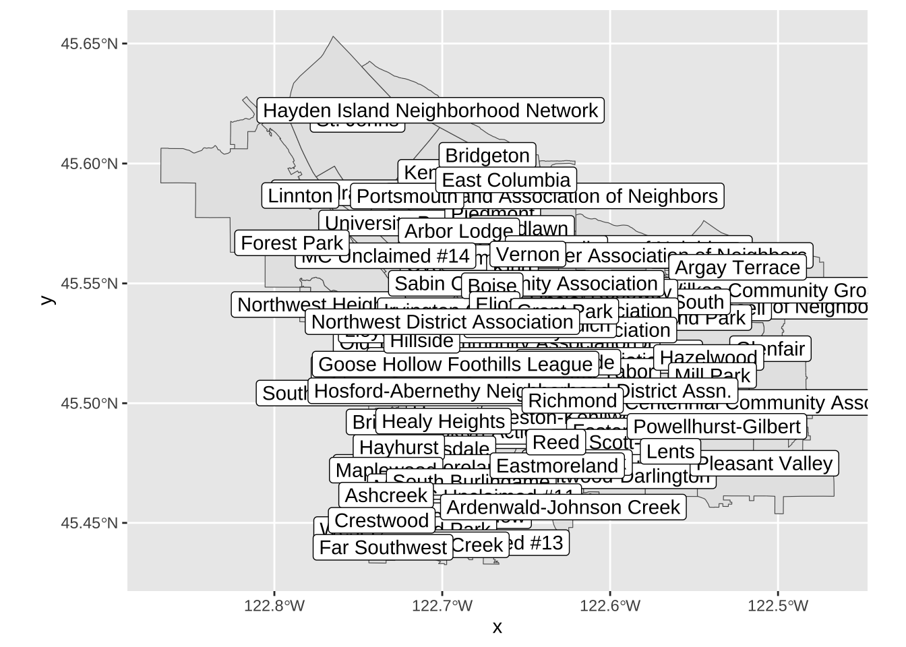
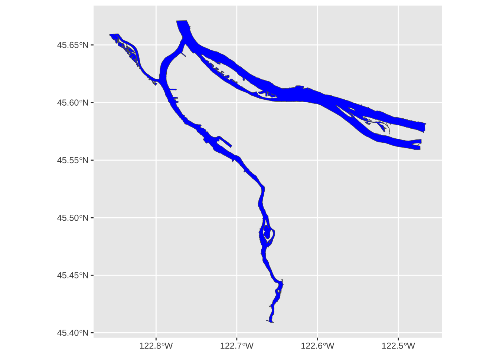
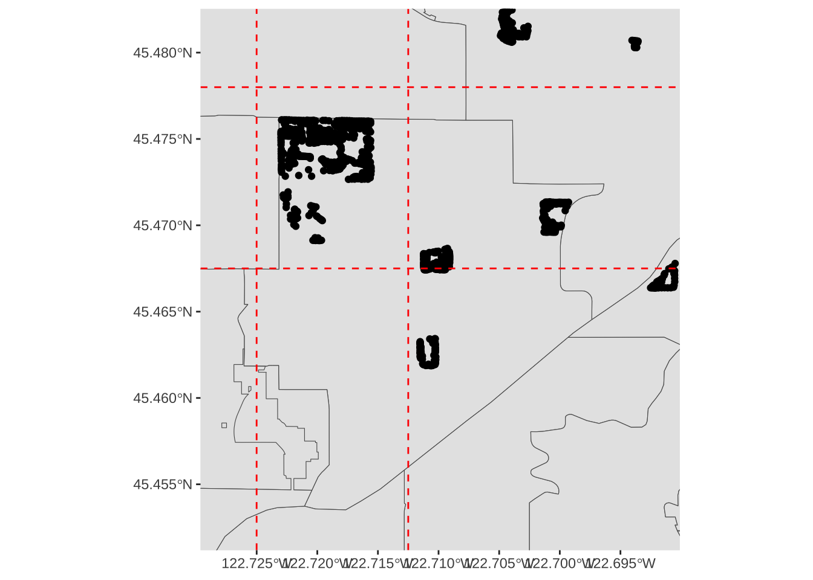
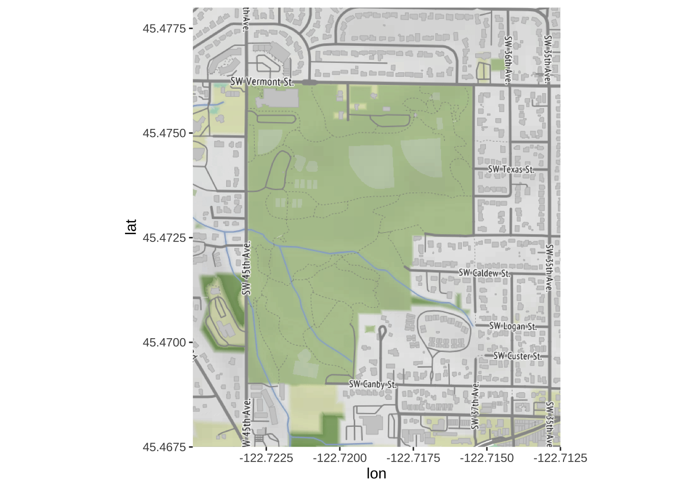
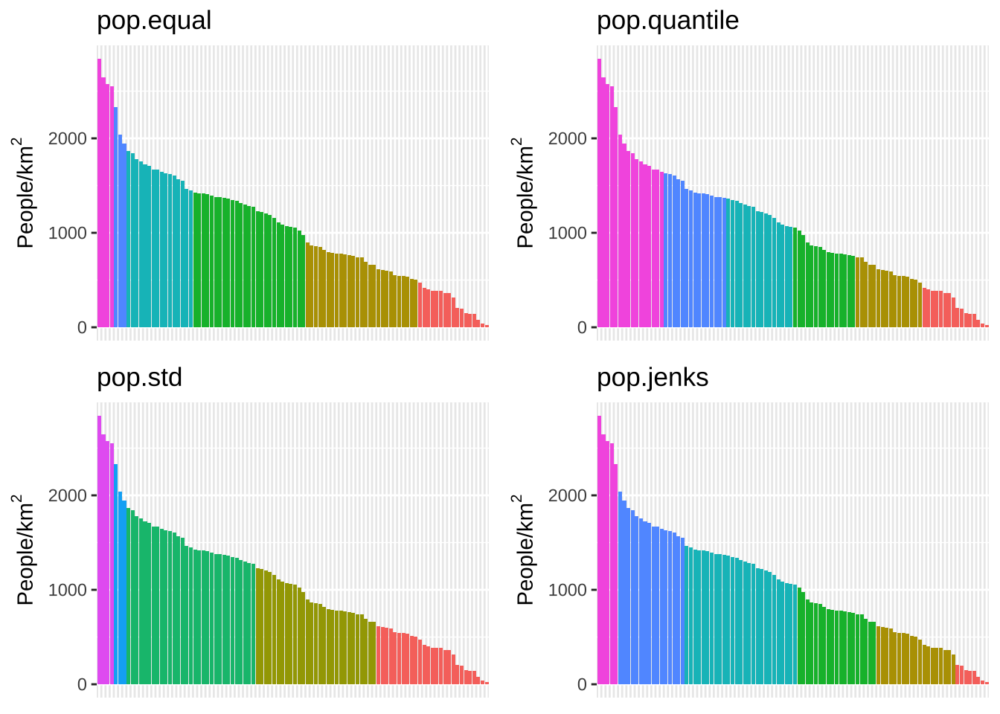

Lab 08: Maps & Cartography
BMI 5/625
Steven Bedrick
1 Getting Started
Today, we’ll be working with spatial data from the City of Portland’s GIS team. We’ll be working with a few different data sets, and will produce several types of maps. To begin, let’s load All The Libraries:
library(tidyverse)
library(sf)
library(sp)
library(tmap)
library(osmdata)
library(ggmap)
library(readxl)
library(classInt)
library(cowplot)
library(maps)
library(prettymapr)
library(ggspatial)
library(basemaps)
library(mapview)1.1 Downloading the data
The data sets we will be using today are:
1.2 An aside: Vector vs. Raster data
In GIS-speak, these data sets are all vector data sets, meaning that their contents are sets of x-y coordinates that define a feature of some kind: a point (e.g., a specific grocery store), a line or set of line segments (e.g., a road), or a polygon (e.g., the outline of a neighborhood, or the shape of the bank of a river). Each feature can have some number of attributes; what those attributes are will depend on the specific data set.
In contrast to vector formats are raster formats (sometimes called bitmap formats). Raster files consist of a uniform grid of numbers (pixels), whose value contain whatever information is being captured. One example of a raster image is a digital photograph (perhaps taken from an airplane or satellite), in which the pixel’s value corresponds to the intensity of light captured at that exact point in the sensor’s field of view. but that is only one form. Many kinds of remote sensing devices capture raster images, and in fact there is no requirement that the values of each pixel correspond to a sensor value at all- it can be a logical (categorical) value, as well.
Crucially, raster images often contain multiple channels (sometimes called bands), representing different sets of spatially-aligned data. One example of this would be a visible-spectrum true-color image, consisting of three bands (one for red, green, and blue). Another example might be bands for sensors capturing at different infrared wavelengths, or for different layers of data.
Like vector data, raster data files generally contain metadata situating the pixels in a specific geographic coordinate reference system. In other words, the raster file “knows” where its edges are in space, and also knows how much distance each pixel is meant to cover. One common raster file format is GeoTIFF, though there are certainly others.

1.3 Spatial data in a non-spatial format
Here’s the data from the City of Portland park tree inventory, in CSV format:
trees_raw <- read_csv("data/lab08/Parks_Tree_Inventory.csv")
glimpse(trees_raw)## Rows: 25,534
## Columns: 41
## $ X <dbl> -13658194, -13658213, -13658254, -13658227,…
## $ Y <dbl> 5712487, 5712485, 5712491, 5712487, 5712488…
## $ OBJECTID <dbl> 426, 427, 428, 429, 430, 431, 432, 433, 434…
## $ Inventory_Date <chr> "2017/05/09 00:00:00+00", "2017/05/09 00:00…
## $ Species <chr> "PSME", "PSME", "CRLA", "QURU", "PSME", "PS…
## $ DBH <dbl> 37.4, 32.5, 9.7, 10.3, 33.2, 32.1, 28.4, 27…
## $ Condition <chr> "Fair", "Fair", "Fair", "Poor", "Fair", "Fa…
## $ TreeHeight <dbl> 105, 94, 23, 28, 102, 95, 103, 105, 97, 112…
## $ CrownWidthNS <dbl> 44, 49, 28, 38, 43, 35, 40, 45, 56, 35, 45,…
## $ CrownWidthEW <dbl> 57, 45, 27, 31, 44, 39, 40, 29, 45, 33, 50,…
## $ CollectedBy <chr> "staff", "staff", "staff", "staff", "staff"…
## $ Notes <chr> NA, NA, NA, NA, NA, NA, NA, NA, NA, NA, NA,…
## $ CrownBaseHeight <dbl> 4, 4, 3, 5, 4, 12, 6, 13, 5, 17, 6, 6, 4, 5…
## $ GlobalID <chr> "{8413C6D7-038A-4685-AFCB-C3BCE4D90A24}", "…
## $ StaffReview <chr> NA, NA, NA, NA, NA, NA, NA, NA, NA, NA, NA,…
## $ created_user <chr> "PARKS_ADMIN", "PARKS_ADMIN", "PARKS_ADMIN"…
## $ created_date <chr> "2017/05/23 19:37:43+00", "2017/05/23 19:37…
## $ last_edited_user <chr> "PKJOSHUA", "PKJOSHUA", "PKJOSHUA", "PKJOSH…
## $ last_edited_date <chr> "2019/12/11 00:42:17+00", "2019/12/11 00:42…
## $ UserID <dbl> 1, 2, 3, 4, 5, 6, 7, 8, 9, 10, 11, 12, 13, …
## $ Structural_Value <dbl> 10101.06, 7900.55, 1110.81, 525.26, 8224.54…
## $ Carbon_Storage_lb <dbl> 3223.3, 2460.8, 310.3, 400.1, 2533.4, 2333.…
## $ Carbon_Storage_value <dbl> 209.07, 159.62, 20.13, 25.95, 164.33, 151.3…
## $ Carbon_Sequestration_lb <dbl> 36.8, 31.3, 14.8, 6.0, 32.0, 30.8, 26.8, 25…
## $ Carbon_Sequestration_value <dbl> 2.39, 2.03, 0.96, 0.39, 2.08, 2.00, 1.74, 1…
## $ Stormwater_ft <dbl> 150.3, 133.0, 35.4, 38.3, 115.5, 85.3, 99.7…
## $ Stormwater_value <dbl> 10.05, 8.89, 2.37, 2.56, 7.72, 5.70, 6.66, …
## $ Pollution_Removal_value <dbl> 18.25, 16.15, 4.31, 4.65, 14.03, 10.36, 12.…
## $ Pollution_Removal_oz <dbl> 40.4, 35.8, 9.5, 10.3, 31.1, 22.9, 26.8, 22…
## $ Total_Annual_Benefits <dbl> 30.69, 27.06, 7.64, 7.59, 23.82, 18.06, 20.…
## $ Family <chr> "Pinaceae", "Pinaceae", "Rosaceae", "Fagace…
## $ Genus <chr> "Pseudotsuga", "Pseudotsuga", "Crataegus", …
## $ Common_name <chr> "Douglas-fir", "Douglas-fir", "Lavalle hawt…
## $ Genus_species <chr> "Pseudotsuga menziesii", "Pseudotsuga menzi…
## $ Functional_type <chr> "CE", "CE", "BD", "BD", "CE", "CE", "CE", "…
## $ Size <chr> "L", "L", "S", "L", "L", "L", "L", "L", "L"…
## $ Native <chr> "Yes", "Yes", "No", "No", "Yes", "Yes", "Ye…
## $ Edible <chr> NA, NA, NA, NA, NA, NA, NA, NA, NA, NA, NA,…
## $ Nuisance <chr> NA, NA, NA, NA, NA, NA, NA, NA, NA, NA, NA,…
## $ Origin <chr> "North America - from British Columbia sout…
## $ Species_factoid <chr> "Bracts on cones look like a mouse's feet a…We can use it like any data frame:
trees_raw %>% ggplot(mapping=aes(x=TreeHeight)) + geom_histogram(bins=50) + ggtitle("Histogram of park tree height")
Let’s look closely at the X and Y
columns:
## # A tibble: 5 × 2
## X Y
## <dbl> <dbl>
## 1 -13658194. 5712487.
## 2 -13658213. 5712485.
## 3 -13658254. 5712491.
## 4 -13658227. 5712487.
## 5 -13658234. 5712488.These clearly refer to some sort of spatial coordinates, and by convention we can guess that they are in a projected (rather than geographic) format- but without additional information it is difficult to know how to interpret them. One major limitation of the CSV format is that it does not make it easy to embed metadata like this in the file. This is particularly important when working with geospatial data! As such, we generally prefer to work with vector file formats such as ESRI’s Shapefile format, which includes metadata.
1.4 A different format: Shapefiles
The Portland Maps Open Data site allows us to download data in ESRI’s
format; let’s take a look, using the sf package’s
st_read function:
trees_shape <- st_read("data/lab08/Parks_Tree_Inventory-shp")## Reading layer `fd3ad191-4bf0-4577-b6ec-724baeb619792020413-1-a3eocm.isio' from data source `/Users/bedricks/Dropbox/Work/Teaching/Spring 2024/Dataviz/labs/data-vis-labs-2024/data/lab08/Parks_Tree_Inventory-shp'
## using driver `ESRI Shapefile'
## Simple feature collection with 25534 features and 39 fields
## Geometry type: POINT
## Dimension: XY
## Bounding box: xmin: -13667450 ymin: 5692149 xmax: -13635010 ymax: 5724486
## Projected CRS: WGS 84 / Pseudo-MercatorShapefiles, among other things, contain information about the coordinate reference system (CRS) that they are using:
st_crs(trees_shape)## Coordinate Reference System:
## User input: WGS 84 / Pseudo-Mercator
## wkt:
## PROJCRS["WGS 84 / Pseudo-Mercator",
## BASEGEOGCRS["WGS 84",
## ENSEMBLE["World Geodetic System 1984 ensemble",
## MEMBER["World Geodetic System 1984 (Transit)"],
## MEMBER["World Geodetic System 1984 (G730)"],
## MEMBER["World Geodetic System 1984 (G873)"],
## MEMBER["World Geodetic System 1984 (G1150)"],
## MEMBER["World Geodetic System 1984 (G1674)"],
## MEMBER["World Geodetic System 1984 (G1762)"],
## MEMBER["World Geodetic System 1984 (G2139)"],
## ELLIPSOID["WGS 84",6378137,298.257223563,
## LENGTHUNIT["metre",1]],
## ENSEMBLEACCURACY[2.0]],
## PRIMEM["Greenwich",0,
## ANGLEUNIT["degree",0.0174532925199433]],
## ID["EPSG",4326]],
## CONVERSION["Popular Visualisation Pseudo-Mercator",
## METHOD["Popular Visualisation Pseudo Mercator",
## ID["EPSG",1024]],
## PARAMETER["Latitude of natural origin",0,
## ANGLEUNIT["degree",0.0174532925199433],
## ID["EPSG",8801]],
## PARAMETER["Longitude of natural origin",0,
## ANGLEUNIT["degree",0.0174532925199433],
## ID["EPSG",8802]],
## PARAMETER["False easting",0,
## LENGTHUNIT["metre",1],
## ID["EPSG",8806]],
## PARAMETER["False northing",0,
## LENGTHUNIT["metre",1],
## ID["EPSG",8807]]],
## CS[Cartesian,2],
## AXIS["easting (X)",east,
## ORDER[1],
## LENGTHUNIT["metre",1]],
## AXIS["northing (Y)",north,
## ORDER[2],
## LENGTHUNIT["metre",1]],
## USAGE[
## SCOPE["Web mapping and visualisation."],
## AREA["World between 85.06°S and 85.06°N."],
## BBOX[-85.06,-180,85.06,180]],
## ID["EPSG",3857]]There’s a lot of information here, but looking through it we can see that the coordinates in this file are against the WGS 84 datum, and that the units are meters. Beyond that, the exact details are, for the moment, not that important. Just know that, taken all together, this is sufficient information for us to plot these points on a map and combine them with any other geospatial data we might encounter.
In many ways, the object we get back is like a data frame,
in that there are columns, which have types, etc. In fact, most
dplyr functions work just fine on these. One of the columns
is called geometry, and is what store the actual
coordinates of whatever objects are stored in the rows. In this case,
each row is a tree, and the relevant geometry entry is a
point.
trees_shape$geometry## Geometry set for 25534 features
## Geometry type: POINT
## Dimension: XY
## Bounding box: xmin: -13667450 ymin: 5692149 xmax: -13635010 ymax: 5724486
## Projected CRS: WGS 84 / Pseudo-Mercator
## First 5 geometries:## POINT (-13658194 5712487)## POINT (-13658213 5712485)## POINT (-13658254 5712491)## POINT (-13658227 5712487)## POINT (-13658234 5712488)For more information about this kind of file, see the
documentation. A helpful deep-dive into the format of this object can be
found here, if you’re really interested in what’s going on
in that $geometry property. :-)
2 Our first map
Our first map will be a simple one, showing the various neighborhood boundaries in Portland.
pdx_boundaries <- st_read("data/lab08//Neighborhoods__Regions_-shp")While we’re at it, we will also load a second shapefile, that includes the geography of the Willamette and Columbia rivers:
river_boundaries <- st_read("data/lab08//Willamette_Columbia_River_Ordinary_High_Water-shp/")Once we have loaded the shapefiles, we have many options. The
built-in base-R plot function can handle these, as can
ggplot via sf’s geom_sf:
pdx_boundaries %>% ggplot() + geom_sf()
Let’s look more closely at our boundaries data set:
glimpse(pdx_boundaries)## Rows: 98
## Columns: 11
## $ OBJECTID <int> 1, 2, 3, 4, 5, 6, 7, 8, 9, 10, 11, 12, 13, 14, 15, 16, 17, …
## $ NAME <chr> "CATHEDRAL PARK", "UNIVERSITY PARK", "PIEDMONT", "WOODLAWN"…
## $ COMMPLAN <chr> NA, NA, "ALBINA", "ALBINA", NA, "ALBINA", "ALBINA", "ALBINA…
## $ SHARED <chr> NA, NA, NA, NA, NA, NA, NA, NA, NA, NA, NA, NA, NA, NA, NA,…
## $ COALIT <chr> "NPNS", "NPNS", "NPNS", "NECN", "CNN", "NPNS", "NPNS", "NEC…
## $ HORZ_VERT <chr> "HORZ", "HORZ", "VERT", "HORZ", "HORZ", "HORZ", "HORZ", "HO…
## $ MAPLABEL <chr> "Cathedral Park", "University Park", "Piedmont", "Woodlawn"…
## $ ID <int> 31, 88, 70, 93, 23, 2, 66, 19, 67, 84, 44, 48, 89, 63, 74, …
## $ Shape_Leng <dbl> 11434.255, 11950.860, 10849.327, 8078.361, 18179.392, 9466.…
## $ Shape_Area <dbl> 5424297.8, 6981456.8, 6079530.0, 3870553.6, 16580624.7, 458…
## $ geometry <MULTIPOLYGON [m]> MULTIPOLYGON (((-13664216 5..., MULTIPOLYGON (…We see that in addition to the geometry of the boundaries themselves,
we also have other columns containing information about each
neighborhood. Notably, one of these is called MAPLABEL-
let’s take that as a suggestion and try labeling our regions:
pdx_boundaries %>% ggplot() + geom_sf() + geom_sf_label(aes(label=MAPLABEL))Note what is happening, here: geom_sf_label() provides a
new ggplot aesthetic to map (label), and we
are mapping it to a data value just like we would in any other geom.
Let’s look at the resulting map:

This map on its own is not especially useful, due to all of the
overlap, but perhaps if we zoom in a bit? We can modify our map’s
viewport by using coord_sf
pdx_boundaries %>% ggplot() + geom_sf() +
coord_sf(
xlim=c(-13670000,-13630000),
ylim=c(5690000, 5710000)
)
Note that the units here are in the same CRS as the original shapefile, but that the map itself is being displayed with latitude/longitude tick marks. We’ll see shortly how we might convert coordinates between the two CRSs, and also discuss what these numbers mean. In the meantime, let’s zoom in some more (by specifying a narrower range):
pdx_boundaries %>% ggplot() + geom_sf() +
coord_sf(
xlim=c(-13665000,-13655000),
ylim=c(5693277, 5698277)) +
geom_sf_label(aes(label=MAPLABEL))
2.1 Adding a layer
There’s something missing from our map: the two lovely rivers that define our city’s geography. We have loaded a shapefile that describes the river; let’s have a look:
river_boundaries %>% glimpse()## Rows: 1
## Columns: 6
## $ OBJECTID <int> 1
## $ Id <int> 6720
## $ gridcode <int> 1
## $ Shape_Leng <dbl> 419214
## $ Shape_Area <dbl> 114297817
## $ geometry <MULTIPOLYGON [m]> MULTIPOLYGON (((-13669922 5...Unlike the pdx_boundaries data set, there’s not a lot of
additional information in this one beyond the raw geometry of the river
(the Portland Maps site does have additional data sets available that
include bathymetric and other data). What does this geometry look
like?
river_boundaries %>% ggplot() + geom_sf()
Hey, there’s our rivers! But the shape is grey; how might we turn it
blue? geom_sf behaves like all other ggplot
directives, and allows us to set aesthetic parameters directly or map
them to data values:
river_boundaries %>% ggplot() + geom_sf(fill="blue")
We may also note that this map took a few seconds to render. That is because the geometry of the river is surprisingly complex, especially along the banks of the Columbia. We can help it out a bit by turning off the outline; rendering that is particularly challenging for the noisy parts of the river bank:
river_boundaries %>% ggplot() + geom_sf(fill="blue", size=0.0)
Another option is to “simplify” the outline of the river, by smoothing out some of the very detailed parts of the polygon. Depending on the kind of map we are making, and the scale at which we are working, this may or may not be appropriate, but for our purposes today it’s just fine:
river_boundaries %>% st_simplify(dTolerance = 10) %>%
ggplot() + geom_sf(fill="blue", size=0.0)
For the rest of this lab, we will work with a simplified version of the river outline:
river_boundaries <- river_boundaries %>% st_simplify(dTolerance = 10) Now, how do we combine our river layer with our neighborhood boundary
layer? Regular ggplot geoms can be combined arbitrarily,
and so can geom_sf layers:
pdx_boundaries %>% ggplot() + geom_sf() + geom_sf(data=river_boundaries, fill="blue", size=0.0)
Putting it all together, we can see that coord_sf
applies to both data layers, and also that regular ggplot themeing
applies here as well:
pdx_boundaries %>% ggplot() +
geom_sf() +
geom_sf(data=river_boundaries, fill="blue", size=0.0) +
coord_sf(xlim=c(-13670000,-13630000), ylim=c(5690000, 5710000)) +
theme_minimal()
That blue is pretty deep and intense; change it to something a bit more river-like.
While you’re at it, the grey background for the neighborhoods is also a bit “blah.” Try changing it to something else.
3 Converting between geographic coordinates and projection coordinates
The coordinates that the Portland Maps data are using are not in
lat/long, but rather in meters (as can be seen by closely examining the
output of st_crs). If you’d rather work with latitude and
longitude, or if you need to get them to line up with data from a
different source, you can convert back and forth between CRSs using
sf_project(). The key is knowing how to tell
sf_project() which CRS to use.
One option would be to give it all of the extensive and detailed
information about the projection and datum that is found using
st_crs(); fortunately, there exists a standardized registry
of spatial reference systems, the EPSG
Geodetic Parameter Dataset, and we can look up CRS configurations
using their EPSG reference number.
Let’s walk through how to use sf_project(). First, we’ll
need a point in WGS84-space:
p1 <- data.frame(lon=c(-122.65), lat=c(45.5))Next, we figure out the EPSG numbers for our source and target CRS. Our source CRS is WGS84, whose CRS number is 4326; let’s say that we wanted to project it into the space that the Portland Maps data is using, so that we could overlay the points or do some sort of distance calculation. The Portland Maps dataset uses EPSG 3857, also known as “Web Mercator”. This is basically WGS84, but it has been “quasi-Mercator projected,” and converted to use meters as units and easting/northing as its direction system (instead of lat/long).
Web Mercator is used by a variety of mapping software packages
(including Google Maps, etc.), hence why it’s what Portland Maps gives.
The motivation behind Web Mercator is that it depends on a spherical
projection geometry (rather than the ellipsoidal projection used by
vanilla Mercator). This makes it vastly simpler to work with from a
computational perspective… at the cost of substantially decreased
accuracy at northern latitudes, even by Mercator standards. For this
reason, the metadata includes a USAGE note saying that it
is only specified for use at latitudes between 85º N and 85º S. In
practice, it is best to not push things even that far; you’ll see
notable distortion by the time you get to Norway and Alaska.
Anyway now that we know which CRS systems are in play, we can use
sf_project():
sf_project(
sf::st_crs(4326), # from: default datum used by geom_sf
sf::st_crs(3857), # to: datum used by Portland Maps data
p1
)## [,1] [,2]
## [1,] -13653336 5700583The process works in reverse:
p2 <- data.frame(lon=c(-13653336), lat=c(5700583))
sf_project(
sf::st_crs(3857), # from: datum used by Portland Maps data
sf::st_crs(4326), # to: default datum used by geom_sf
p2
)## [,1] [,2]
## [1,] -122.65 45.5Another common way to define a CRS is with a “PROJ.4”
string. Instead of referring to a standard, predefined projection as
with an EPSG code, the proj.4 string includes all of the necessary
information to describe an arbitrary projection. Consider this example,
from the geom_sf documentation:
world1 <- sf::st_as_sf(map('world', plot = FALSE, fill = TRUE))
ggplot() + geom_sf(data = world1)
# now, project to a Lambert Equal-Area Projection, centered at Antarctica:
world2 <- sf::st_transform(
world1,
"+proj=laea +y_0=0 +lon_0=155 +lat_0=-90 +ellps=WGS84 +no_defs"
)
ggplot() + geom_sf(data = world2)
A deep-dive into proj.4 strings is beyond the scope of this lab, but as a challenge: look closely at that string, and see if you can think of a way to modify it to project centered on Portland (lon: -122.65, lat: 45.5), to make the following plot:

Pick a different_ projection, and show how it looks with at least two different center points. Here is a guide to a little bit more information about the syntax for the proj4 specification.
4 Plotting Points
Now that we can draw a base map, it’s time to try plotting some data. Let’s load up the tree census, farmer’s marker, and grocery store data sets.
trees_shape <- st_read("data/lab08/Parks_Tree_Inventory-shp")
farmers_market <- st_read("data/lab08/Farmers_Markets-shp/")
grocery_stores <- st_read("data/lab08/Grocery_Stores-shp/")Beginning with the farmer’s market data set:
glimpse(farmers_market)## Rows: 20
## Columns: 12
## $ OBJECTID <int> 1, 2, 3, 4, 5, 6, 7, 8, 9, 10, 11, 12, 13, 14, 15, 16, 17, …
## $ xcoord <dbl> 7639494, 7659590, 7667868, 7650248, 7652231, 7641969, 76715…
## $ ycoord <dbl> 668024.5, 688714.1, 682226.2, 666265.0, 675950.3, 680443.0,…
## $ Market <chr> "Hillsdale Farmers Market", "Hollywood Farmers Market", "Mo…
## $ Location <chr> "SW Capitol Highway and SW Sunset Boulevard", "NE 44th Aven…
## $ Day <chr> "Sunday", "Saturday", "Sunday", "Wednesday", "Wednesday", "…
## $ Open_Dates <chr> "March 3, 17 & 31, April 14; weekly April 28 - November 24…
## $ Open_Times <chr> "9 a.m. - 1 p.m", "8 a.m. - 1 p.m. (April - Sept) \n9 a.m. …
## $ Accepts <chr> "cash, credit, debit, SNAP (up to $10 match) and FDNP", "de…
## $ Website <chr> "http://www.hillsdalefarmersmarket.com", "http://hollywoodf…
## $ status <chr> "Active", "Active", "Active", "Active", "Active", "Active",…
## $ geometry <POINT [m]> POINT (-13658191 5697100), POINT (-13649708 5706344),…Just like we overlaid the river layer, we can do the same with the market. The coordinate systems are all aligned, so this will Just Work:
pdx_boundaries %>% ggplot() +geom_sf() +
geom_sf(data=river_boundaries, fill="blue", size=0.0) +
geom_sf(data=farmers_market) +
ggtitle("Portland Farmer's Markets") +
theme_minimal()
We use aesthetic mappings, like any other ggplot geom:
pdx_boundaries %>% ggplot() +geom_sf() +
geom_sf(data=river_boundaries, fill="blue", size=0.0) +
geom_sf(data=farmers_market, mapping=aes(color=Day)) +
ggtitle("Portland Farmer's Markets, by Day") +
theme_minimal()
Create a map showing the location of grocery stores and farmer’s markets, with a different point shape used to indicate which is which.
4.1 Adding more data
Let’s dig in a bit to the grocery store data set:
grocery_stores %>% glimpse## Rows: 123
## Columns: 10
## $ OBJECTID <int> 1, 2, 3, 4, 5, 6, 7, 8, 9, 10, 11, 12, 13, 14, 15, 16, 17, 1…
## $ ADDRESS <chr> "330 1ST ST, 97034", "1222 NE 102ND AVE, 97220", "7500 SW DA…
## $ NAME <chr> "Wizer's Grocery", "Winco Foods", "Winco Foods", "Winco Food…
## $ STATE_ID <chr> "21E03DD08300", "1N2E34BB 4300", "1S136DC04500", "1N2E26CC …
## $ BLDG_SQFT <int> 43128, 61599, 87996, 103040, 10000, 5257, 7596, 10711, 51825…
## $ STATUS <chr> "Existing", "Existing", "Existing", "Existing", "Existing", …
## $ TYPE <chr> "Independent or Ethnic Grocery", "Large Chain Grocery", "Lar…
## $ X <dbl> 7646238, 7674902, 7623671, 7680439, 7647761, 7652200, 763836…
## $ Y <dbl> 646225.0, 686504.9, 652777.9, 688331.7, 683210.1, 675961.4, …
## $ geometry <POINT [m]> POINT (-13655011 5687695), POINT (-13642965 5705539), …As before, we can map standard ggplot aesthetics:
pdx_boundaries %>% ggplot() +geom_sf() +
geom_sf(data=river_boundaries, fill="blue", size=0.0) +
geom_sf(data=grocery_stores, mapping=aes(color=TYPE)) +
ggtitle("Portland Grocery Stores, by Type") +
theme_minimal()
Note that for exploring this part of the data, we may wish to bring in additional layers- perhaps the routes of I-5 and I-205. Other major arterial roads may also be important (Foster, Powell, and 82nd on the East side come to mind, as does Barbur and Capitol Highway on the West side).
With this many data points, it may begin to make sense to look not at
discrete points but rather at a density or contour plot. Making this is
a tiny bit more complicated, since the X and Y
columns in this particular data set do not seem to be in the same
coordinate system, and it is not entirely obvious from the Portland Maps
site what system those columns are in. üò£ Fortunately, the points in the
$geometry column are just fine, and we can extract those
using st_coordinates for use by
stat_density_2d:
pdx_boundaries %>% ggplot() +
geom_sf() +
geom_sf(data=river_boundaries, fill="blue", size=0.0) +
geom_sf(data=grocery_stores, color=scales::alpha("seagreen", 0.45)) +
stat_density_2d(
data=data.frame(st_coordinates(grocery_stores$geometry)),
mapping=aes(X,Y),
color="red",
alpha=0.5) +
ggtitle("Portland Grocery Stores") +
theme_minimal()
We see a relative paucity of grocery stores in the far eastern part of the city as compared to the west and inner parts of the east side.
4.2 Now let’s look at the trees
The tree inventory data set is a different kettle of fish altogether. First, it is much larger:
nrow(trees_shape)## [1] 25534This means that plotting these points is going to be a lot more work for R. Furthermore, the distribution of the points is rather clumpy:
pdx_boundaries %>% ggplot() + geom_sf() +
geom_sf(data=river_boundaries, fill="blue", size=0.0) +
geom_sf(data=trees_shape)
In essence, each of those black blobs is hundreds of points overlaid on top of one another. If we do a contour map, we can see this more clearly:
pdx_boundaries %>% ggplot() + geom_sf() + stat_density_2d(data=trees_raw, aes(X, Y))
What is going on, here? Well, let’s zoom in a bit on Southwest portland:
pdx_boundaries %>% ggplot() + geom_sf() + geom_sf(data=river_boundaries, fill="blue", size=0.0) + geom_sf(data=trees_shape) + coord_sf(xlim=c(-13662000,-13658000), ylim=c(5693059, 5697583))
That large clump up in the upper left-hand corner is Gabriel Park, and we can see now that the individual points in this data set are crammed in close together because they represent trees that are literally next to one another in a park. Our contour map above is really just showing us what parts of town have a lot of tree-filled parks!
Let’s explore the tree data a bit more by zooming in to Gabriel Park. We’ll first subset our data to only include trees in that park, so let’s eyeball a bounding box:

We can guesstimate some lon/lat coordinates, and project them into map units:
p3 <- data.frame(lon=c(-122.725, -122.7125), lat=c(45.4675, 45.478))
sf_project(
sf::st_crs(4326), # from: default datum used by geom_sf
sf::st_crs(3857), # to: datum used by Portland Maps data
p3
)## [,1] [,2]
## [1,] -13661685 5695423
## [2,] -13660293 5697089And then use st_crop to filter our data set:
trees_in_park <- st_crop(trees_shape, xmin=-13661685, ymin=5695423, xmax=-13660293, ymax=5697089)
paste0("Total number of trees in original dataset: ", length(trees_shape$geometry))## [1] "Total number of trees in original dataset: 25534"paste0("Number of trees in our bounding box: ", length(trees_in_park$geometry))## [1] "Number of trees in our bounding box: 618"If we zoom in to just this box, what does our map look like?
pdx_boundaries %>% ggplot() + geom_sf() +
geom_sf(data=river_boundaries, fill="blue", size=0.0) +
geom_sf(data=trees_in_park) +
coord_sf(xlim=c(-13661685,-13660293), ylim=c(5695423, 5697089)) 
Follow this process (cropping the data set to a bounding box, etc.) for a park in your neighborhood, and create a comparable map.
4.2.0.1 Side-quest: Bounding Boxes
“Eyeballing” bounding boxes is a little tedious and erorr prone, but is a good place to start. What are some other methods?
4.2.0.1.1 Using tools!
The basemaps package (which is fabulous, but also
slightly buggy, so we won’t be using it much this week), has a handy
function called draw_ext that will let us interactively
draw a bounding box (as well as other shape features, such as polygons).
Invoke it like so:
some.bbox.of.interest <- basemaps::draw_ext()An interactive map will appear (implemented using Shiny!), looking something like this:

The result will be a sfc object with unprojected points
in the WGS84 CRS, so you’ll probably need to convert it into your map’s
CRS, but it can be a lot faster and easier than manually guessing
coordinates.
4.2.0.1.2 Let R do the work!
Another option is to let R do the work- if you have a particular
point of interest (the centroid of a neighborhood, a particular tree,
etc.) you can use functions like st_buffer() to create a
region extending out a certain radius from your point, and then use
st_bbox() to compute that region’s bounding box. There
exist a whole suite of other functions that can be used in a similar
workflow (st_touches, etc.), as well. This method can be a
little more work for you as a programmer, but will be more versatile and
— importantly — more amenable to automation.
4.2.0.2 Continuing on!
Note that, besides the trees themselves, this map is kind of boring.
We can start to see the layout of trees in the park, but it’s hard to
know how to contextualize it. At this zoom level, our neighborhood
boundary data set is no longer especially useful. We might instead want
other features: roads, etc. Or, we might want to base our map on other
data entirely, like perhaps an aerial photo. One option would be for us
to find that data (roads, for instance, are available from Portland
Maps) and manually add it, the way we did with the rivers. There are
easier options, however. Let’s look at how we might use a richer,
pre-built map using OpenStreetMap data and ggmap.
4.3
ggmap
`ggmap is a package that tries to make it convenient to
quickly access raster map tiles through either Google Maps or
OpenStreetMap to use as a “basemap”. Note that hosting map tiles is
expensive and a bit complicated, so it is mostly done by companies; both
Google and Stadia Maps are
good bets. They both have very generous free tiers of service that will
be more than adequate for any normal use you are likely to
encounter.
I recommend starting with Stadia. You will need to make an account with them, and then tell R to use your account’s API key, like so:
register_stadiamaps("YOUR_KEY_GOES_HERE", write=FALSE)Once we’ve done that, we may begin using ggmap. We
generate a basemap using get_stadiamap() (there are related
functions for different tile sets).
park_base_map <- get_stadiamap(
c(left=-122.725, bottom=45.4675, right=-122.7125, top=45.478), # note: in practice, we wouldn't enter these by hand, we would use st_bbox() or something similar!
zoom=16,
maptype="stamen_terrain") # try experimenting with "toner", etc. ## ‚Ñ𠬩 Stadia Maps ¬© Stamen Design ¬© OpenMapTiles ¬© OpenStreetMap contributors.ggmap(park_base_map)
Now, we are ready to try plotting the trees over our base map. Our
trees and basemap are in different projections, and ggmap
can’t quite handle that situation “on its own”. We must manually
re-project our trees’ locations:
# ggmap isn't smart enough to reproject, so we need to by hand
trees_park_projected <- st_transform(trees_in_park, sf::st_crs(4326))Now, we can use our re-projected trees and our basemap:
ggmap(park_base_map) +
geom_sf(data=trees_park_projected, inherit.aes = FALSE) # note - this is needed due to a slight quirk between ggmap, ggplot, and geom_sf
geom_sf still work the way we’ve been using it; now that
we have our points on a map, let’s color by the type of tree:
ggmap(park_base_map) +
geom_sf(data=trees_park_projected, inherit.aes = FALSE,
alpha=0.5,
mapping=aes(color=Genus)) # just like any other ggplot geom## Coordinate system already present. Adding new coordinate system, which will
## replace the existing one.
Clearly, there are too many levels for this variable to be truly useful; we would want to do some sort of additional categorizing. But it is enough to see that there are some general patterns of what kinds of trees were inventoried in which part of the park!
4.4
ggspatial
ggspatial is another extension to ggplot
that makes OpenStreetMap base data easy to work with. Unlike
ggmap, it is able to automatically deal with
projections:
# look, Ma, no re-projection needed!
ggplot() + annotation_map_tile(type="osm") + layer_spatial(trees_in_park)
ggspatial has several other handy features for
annotating geodata that go beyond what geom_sf has to
offer.
Using either ggmap or ggspatial, take your
local park’s tree map (from challenge #5) and place it on a
OpenStreetMap raster tile. Use at least one aesthetic mapping (color,
point shape, etc.) to visualize at least one type of data about the
trees (other than genus).
Feel free to experiment with different map tile styles!
4.5 Interactive Map
What about interactivity? Here are two tools for making interactive maps, one a little fancier and one a little more basic.
4.5.1 Basics:
mapview
mapview is
a fantastically useful library, and is an essential tool for your GIS
workflow. It is probably the fastest way to go from “I have geospatial
data” to “a map that I can look at”, with the caveat that it is meant
for quick-and-dirty data exploration, not presentation-quality
graphics.
In its simplest form, you simply pipe an sf object to
mapview():
pdx_boundaries %>% mapview()Note that, in addition to panning and zooming the map, you can click on a feature to see the associated data.
Importantly, mapview can handle multiple datasets:
mapview(list(pdx_boundaries, trees_in_park))mapview has many options, for changing the
basemap, to setting colors, etc. Note, also, that it is perfectly happy
to deal with projection issues for us! We do not need to manually
project or otherwise transform our data- it figures it out on its
own.
Again, it is not for presentation-quality graphics, but more
for data exploration. It integrates well with Shiny (via
mapviewOutput/renderMapview), as well!
4.5.2 Fancier: Leaflet
Leaflet is a somewhat fancier and
more powerful library for interactive maps that is widely used outside
of the R ecosystem, but which has excellent R integration. We will also
use the leaflet.esri extension, so we can use ESRI’s aerial
photos.
library(leaflet)
library(leaflet.esri)## Loading required package: leaflet.extrasAs with ggmap, Leaflet wants things in WGS84 and will
not automatically reproject our data for us, so we will need to work
with trees_park_projected:
# now make a map with leaflet!
leaflet(trees_park_projected) %>% # we can pass in a dataframe to use...
addEsriBasemapLayer(esriBasemapLayers$Imagery) %>%
setView(-122.719, 45.474, zoom=16) %>%
addCircleMarkers()One nice thing about Leaflet maps is that we can allow the user to
see more information about individual data points, via the
label and related properties.
leaflet(trees_park_projected) %>%
addEsriBasemapLayer(esriBasemapLayers$Imagery) %>%
setView(-122.719, 45.474, zoom=16) %>%
addCircleMarkers(label = ~Genus_spec) # we can refer to properties of the data frame this wayNote: Leaflet also works well with
Shiny, and has leafletOutput/renderLeaflet
functions that behave as you would expect.
5 How about a chloropleth map?
Changing gears, we now turn to chloropleth maps. As we discussed on Monday, a very important consideration when working with a chloropleth map is that one must normalize quantities consistently across the regions of the map.
Continuing with our Portland-themed lab, we will be working with a dataset produced by the City that aligns our neighborhood districts with their corresponding data from the 2010 Census. This data set includes a great deal of information about each neighborhood’s demographics; for now, we will work with the total population.
We will need to join our existing dataframe of neighborhood boundaries with this Census dataset; while both include neighborhood names, there is some variability in how the neighborhoods are referred to (“PEARL” vs. “PEARL DISTRICT”) that we must deal with. This issue is extremely common when working with this kind of data, especially at the level of neighborhoods. Many administrative regions/districts have standardized numerical codes, maintained by the USGS and the Census Bureau, and you will likely have better luck using those to merge datasets rather than relying on names.
# pull data out of the Excel file, by cell range
pdx_population <- read_excel("data/lab08/Census_2010_Data_Cleanedup.xlsx",
sheet="Census_2010_Neighborhoods",
range="A7:B101",
col_names = c("Neighborhood", "Total.Pop")) %>%
mutate(Neighborhood=as.factor(Neighborhood))
# we need to do a tiny bit of cleanup; the census spreadsheet has some slightly different names
pdx_population <- pdx_population %>% mutate(Neighborhood=recode(Neighborhood,
"ARGAY" = "ARGAY TERRACE",
"BROOKLYN" = "BROOKLYN ACTION CORPS",
"BUCKMAN" = "BUCKMAN COMMUNITY ASSOCIATION",
"CENTENNIAL" = "CENTENNIAL COMMUNITY ASSOCIATION",
"CULLY" = "CULLY ASSOCIATION OF NEIGHBORS",
"CENTENNIAL" = "CENTENNIAL COMMUNITY ASSOCIATION",
"DOWNTOWN" = "PORTLAND DOWNTOWN",
"GOOSE HOLLOW" = "GOOSE HOLLOW FOOTHILLS LEAGUE",
"HAYDEN ISLAND" = "HAYDEN ISLAND NEIGHBORHOOD NETWORK",
"HOSFORD-ABERNETHY" = "HOSFORD-ABERNETHY NEIGHBORHOOD DISTRICT ASSN.",
"IRVINGTON" = "IRVINGTON COMMUNITY ASSOCIATION",
"LLOYD DISTRICT" = "LLOYD DISTRICT COMMUNITY ASSOCIATION",
"NORTHWEST DISTRICT" = "NORTHWEST DISTRICT ASSOCIATION",
"OLD TOWN-CHINATOWN" = "OLD TOWN COMMUNITY ASSOCIATION",
"PARKROSE HEIGHTS" = "PARKROSE HEIGHTS ASSOCIATION OF NEIGHBORS",
"PEARL" = "PEARL DISTRICT",
"SABIN" = "SABIN COMMUNITY ASSOCIATION",
"SELLWOOD-MORELAND" = "SELLWOOD-MORELAND IMPROVEMENT LEAGUE",
"SOUTHWEST HILLS" = "SOUTHWEST HILLS RESIDENTIAL LEAGUE",
"SUMNER" = "SUMNER ASSOCIATION OF NEIGHBORS",
"SUNDERLAND" = "SUNDERLAND ASSOCIATION OF NEIGHBORS",
"WILKES" = "WILKES COMMUNITY GROUP"
))
# and now left join with our boundary data set- note that there will be some regions with no population data, so we want a left-join
boundaries_with_pop <- left_join(pdx_boundaries, pdx_population, by=c("NAME"="Neighborhood"))
boundaries_with_pop %>% glimpse## Rows: 98
## Columns: 12
## $ OBJECTID <int> 1, 2, 3, 4, 5, 6, 7, 8, 9, 10, 11, 12, 13, 14, 15, 16, 17, …
## $ NAME <chr> "CATHEDRAL PARK", "UNIVERSITY PARK", "PIEDMONT", "WOODLAWN"…
## $ COMMPLAN <chr> NA, NA, "ALBINA", "ALBINA", NA, "ALBINA", "ALBINA", "ALBINA…
## $ SHARED <chr> NA, NA, NA, NA, NA, NA, NA, NA, NA, NA, NA, NA, NA, NA, NA,…
## $ COALIT <chr> "NPNS", "NPNS", "NPNS", "NECN", "CNN", "NPNS", "NPNS", "NEC…
## $ HORZ_VERT <chr> "HORZ", "HORZ", "VERT", "HORZ", "HORZ", "HORZ", "HORZ", "HO…
## $ MAPLABEL <chr> "Cathedral Park", "University Park", "Piedmont", "Woodlawn"…
## $ ID <int> 31, 88, 70, 93, 23, 2, 66, 19, 67, 84, 44, 48, 89, 63, 74, …
## $ Shape_Leng <dbl> 11434.255, 11950.860, 10849.327, 8078.361, 18179.392, 9466.…
## $ Shape_Area <dbl> 5424297.8, 6981456.8, 6079530.0, 3870553.6, 16580624.7, 458…
## $ Total.Pop <dbl> 3349, 6035, 7025, 4933, 13209, 6153, 6093, 9550, 6363, 2137…
## $ geometry <MULTIPOLYGON [m]> MULTIPOLYGON (((-13664216 5..., MULTIPOLYGON (…Now that we’ve got the population column, we can tell
geom_sf to use it for the “fill” aesthetic:
boundaries_with_pop %>% ggplot() +
geom_sf(aes(fill=Total.Pop)) +
scale_fill_gradient() +
geom_sf(data=river_boundaries, fill="blue", size=0.0) This is, of course, ignoring the first rule of chloropleth maps: beware of differing region sizes! We should really be plotting population density- people per square kilometer, or something like that. Our shapefile with Portland’s neighborhoods helpfully includes a column with each neighborhood’s area, in square meters, for precisely this purpose.
# compute people per square kilometer
# NB: Shape_Area is in meters^2
boundaries_with_pop <- boundaries_with_pop %>%
mutate(adj_pop = (Total.Pop / (Shape_Area / 1E6))) %>% arrange(adj_pop)Now, let’s look at our revised map:

That’s much better!
Look at the original spreadsheet and pick another column of interest (besides total population); revise the data ingest process, and map that column instead.
5.1 Setting Color Scales
The default colors have three big issues:
- They are blue, so conflict with the river
- We have some missing data (i.e., neighborhoods where we don’t have population data) and those are not apparent in this scale
- The scale may be highlighting certain differences at the expense of others.
Let’s explore some different coloring options! First, let’s familiarize ourselves with the data distribution across neighborhoods.
We can see straight away that the distribution is not uniform- there are some outlier neighborhoods with much higher population density. Another way to look at this is with a histogram:
If we have uniform distribution of data, a uniform color scale may be what we want, but in this case it is not: the color range is going to be very compressed down in the range at which most of the data lives. Let’s explore four different options:
- Equal spacing across the entire range of data
- Quantile spacing (i.e., color breaks at each quantile boundary)
- A simple breaking scheme that takes into account the data’s variability (i.e., more breaks for more variable data)
- A more sophisticated adaptive scheme (Jenks’ algorithm), that looks for “natural” breaks in the range of data.
# following https://blog.datawrapper.de/how-to-choose-a-color-palette-for-choropleth-maps/
# and https://rpubs.com/danielkirsch/styling-choropleth-maps
min.pop <- min(boundaries_with_pop$adj_pop, na.rm=TRUE)
max.pop <- max(boundaries_with_pop$adj_pop, na.rm=TRUE)
diff.pop <- max.pop - min.pop
std.dev.pop <- sd(boundaries_with_pop$adj_pop, na.rm = TRUE)
# some possible color break points
equal.interval <- seq(min.pop, max.pop, by= diff.pop / 6)
quantile.interval <- quantile(boundaries_with_pop$adj_pop, probs=seq(0, 1, by = 1/6), na.rm = TRUE)
std.interval <- c(seq(min.pop, max.pop, by=std.dev.pop), max.pop)
jenks.interval <- classIntervals(boundaries_with_pop$adj_pop, n=6, style='jenks')$brks
# now assign neighborhoods to their bin, using each of these methods:
# 6 equal cut-points across the population range
boundaries_with_pop$pop.equal = cut(boundaries_with_pop$adj_pop, breaks=equal.interval, include.lowest = TRUE)
# Cut-points at population quantiles
boundaries_with_pop$pop.quantile = cut(boundaries_with_pop$adj_pop, breaks=quantile.interval, include.lowest = TRUE)
# Cut points at increments of the standard deviation of the dataset
boundaries_with_pop$pop.std = cut(boundaries_with_pop$adj_pop, breaks=std.interval, include.lowest = TRUE)
# Jenks's algorithm for adaptive breakpoints
boundaries_with_pop$pop.jenks = cut(boundaries_with_pop$adj_pop, breaks=jenks.interval, include.lowest = TRUE)Now we can visualize which neighborhoods would be colored similarly under the different schemes:
popDensBarChart <- function(break_col) {
boundaries_with_pop %>%
filter(!is.na(adj_pop)) %>%
ggplot(mapping = aes(x=fct_reorder(MAPLABEL, -adj_pop), y=adj_pop)) +
geom_col(aes(fill=.data[[break_col]])) +
# theme(axis.text.x=element_text(angle=270, hjust=0, size=6, vjust=0.5)) +
theme(axis.text.x=element_blank(), axis.ticks.x=element_blank()) +
scale_y_continuous(name=expression("People/km" ^2)) +
scale_x_discrete(name=NULL) +
scale_fill_discrete(guide=FALSE) +
ggtitle(break_col)
}
plot_grid(
popDensBarChart("pop.equal"),
popDensBarChart("pop.quantile"),
popDensBarChart("pop.std"),
popDensBarChart("pop.jenks"),
nrow=2, ncol=2
)
We can see here that the quantile method is probably not what we want: lots of the denser counties are getting lumped together in a way that they probably shouldn’t be. Now let’s try using different ones of these for our map. While we’re at it, we are going to change our color scheme as well.


Perform a similar analysis for the census data column you are working with. Is six the right number of bins? Which method works best for your specific data?
6 Also of note:
tmap
tmap is a powerful library for “thematic maps”-
chloropleth maps, etc. It has some additional capabilities beyond what
ggplot and geom_sf have to offer, and if you
find yourself doing a lot of mapping, it is probably worth checking
out.
tm_shape(pdx_boundaries) +
tm_fill() +
tm_borders() +
tm_shape(river_boundaries) +
tm_fill(col="blue")